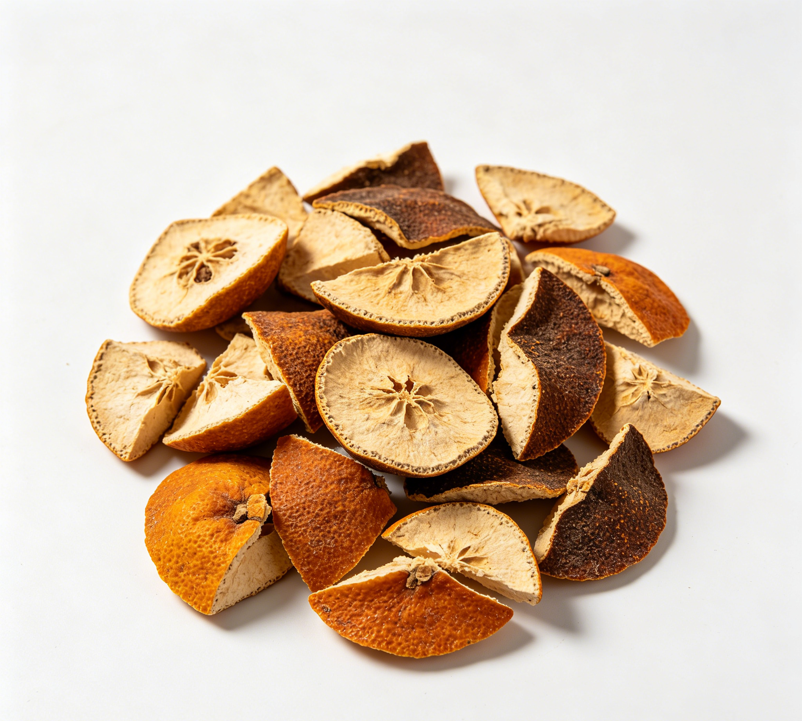

📋 基本信息
中文名桔红
拉丁名Peel of Tangerine
英文名Exocarpium Citri Rubrum
产地科属：芸香科（Rutaceae）柑橘属（Citrus），拉丁学名Citrus reticulata Blanco。主产地：四川（川橘、大红袍）、福建（福橘）、浙江、江西、湖南、湖北、广东、广西等柑橘主产区，传统以四川、福建产者为佳。【《中国药典》2020年版及《中华本草》】
性状本品呈长条形或不规则薄片状，边缘皱缩向内卷曲。外表面黄棕色或橙红色，存放后呈棕褐色，密布黄白色突起或凹下的油室。内表面黄白色，密布凹下透光小圆点。质脆易碎。气芳香，味微苦、麻。【《中国药典》2020年版一部】
用法用量3～10g。【《中国药典》2020年版一部】
贮藏置阴凉干燥处，防蛀。【《中国药典》2020年版一部】
☯ 传统属性
四气温
五味辛、苦
归经肺、脾经
功能主治理气宽中，燥湿化痰。用于咳嗽痰多，食积伤酒，呕恶痞闷。【《中国药典》2020年版一部】
禁忌症阴虚燥咳及气虚者慎服；本品辛温燥散，不宜过量久服。【《中华本草》及中药学工具书】
毒性常规剂量（3～10g）下安全性好。辛温燥散，过量或长期服用可耗气伤阴，出现口干、咽燥、便秘等；所含挥发油对胃肠黏膜有轻度刺激，空腹大量服用可致胃部不适、恶心；偶见对柑橘类成分过敏者出现皮疹、瘙痒。气虚、阴虚者误用可加重乏力气短、燥热症状。
适宜体质气虚质、平和质、痰湿质、湿热质
适宜证型气虚证、脾胃气虚证、痰湿证、湿热证
🔬 现代研究
主要成分桔红（橘红）主要含挥发油与黄酮类成分。挥发油以柠檬烯为主，另含γ-松油烯、月桂烯等；黄酮类以橙皮苷为主要质控指标成分，另含新橙皮苷、芸香柚皮苷、川陈皮素、橘皮素、红橘素（蜜橘黄素）、米橘素等多甲氧基黄酮及二氢黄酮类成分，尚含少量有机酸、香豆素类成分。【《中国药典》2020年版及公开成分研究文献】
药理作用①祛痰、镇咳、平喘：所含挥发油及黄酮类能促进呼吸道黏液分泌、稀释痰液，动物实验显示镇咳祛痰作用；②促进消化：挥发油可刺激胃肠黏膜、促进消化液分泌与胃肠蠕动，芳香健胃；③抗炎、抗氧化：橙皮苷及多甲氧基黄酮（川陈皮素、橘皮素等）具有抗炎、清除自由基、保护血管内皮作用；④抑菌：其提取物对金黄色葡萄球菌、大肠杆菌等有抑制作用；⑤另有降血脂、利胆、镇痛等报道。【《中华本草》及公开科研文献】
食疗功效桔红辛散苦降、温而不烈，传统食疗取其理气宽中、燥湿化痰、消食醒酒之功，素有'利气要药'之称。民间常用于风寒咳嗽痰多、食积腹胀、酒后呕恶：如桔红蜂蜜茶、桔红炖雪梨、桔红姜汤等。对长期烟酒、咽喉不适、晨起痰多者有辅助调理作用；与陈皮相比，其温燥化痰之力更强而健脾理气稍逊。
食养禁忌
🏭 产品形态与潜在功能
推荐形态
粉末丸剂干果
潜在功能